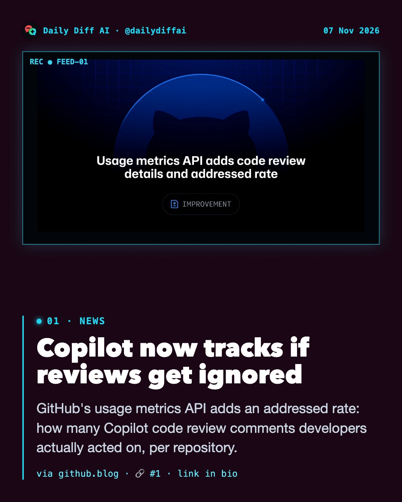
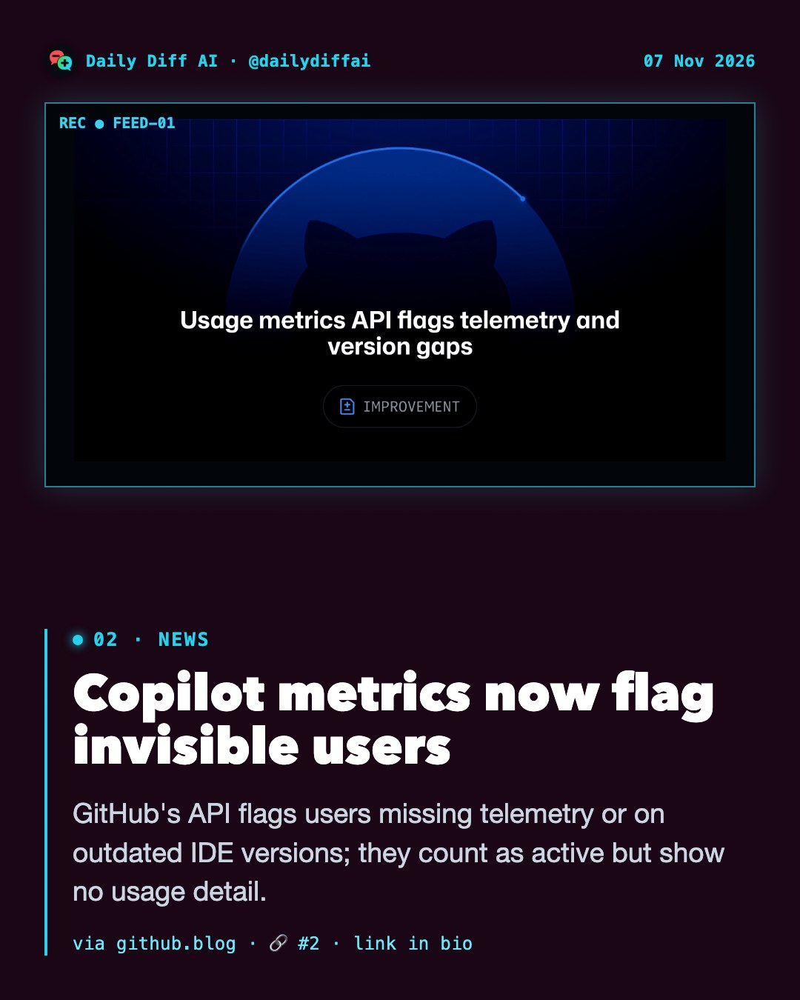
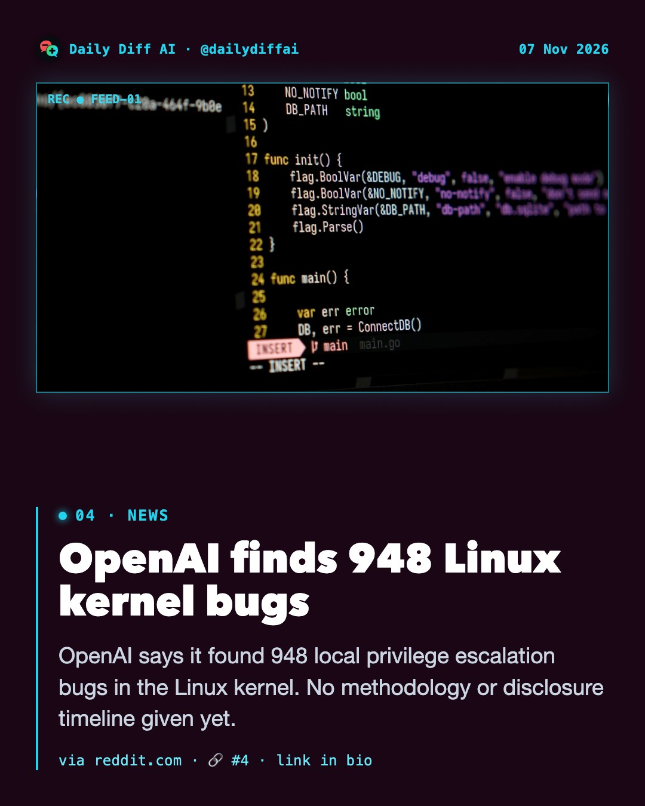
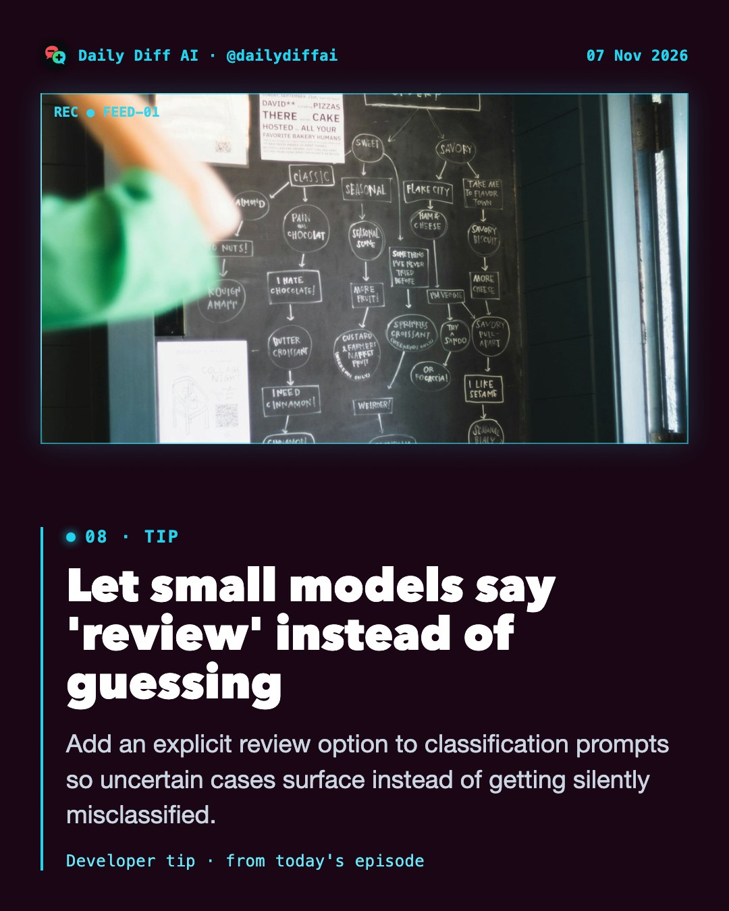
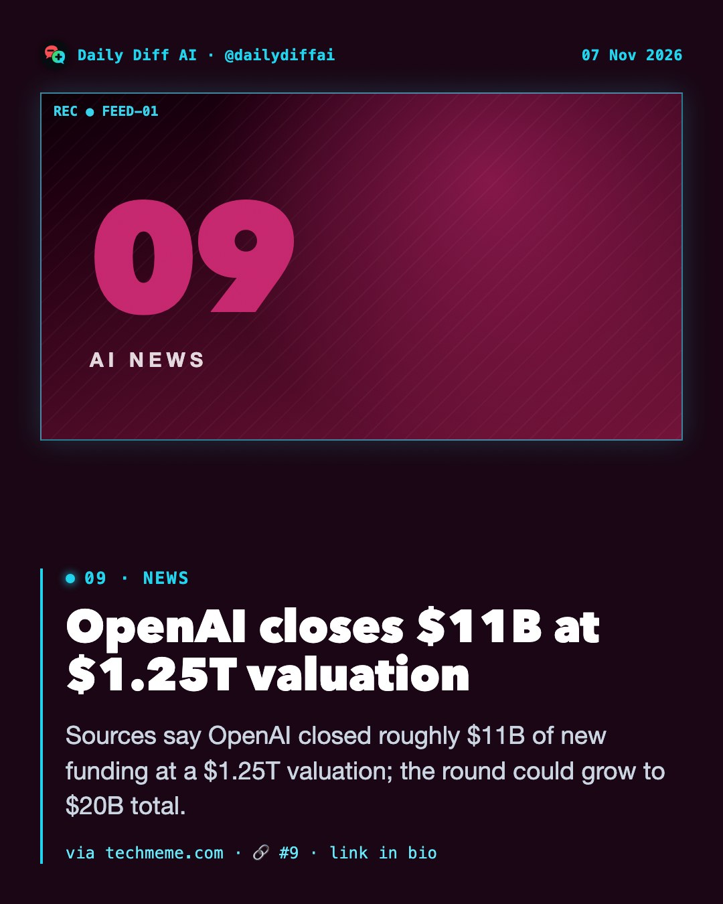

GitHub's usage metrics API adds an addressed rate: how many Copilot code review comments developers actually acted on, per repository.
Read on github.blog →
GitHub's API flags users missing telemetry or on outdated IDE versions; they count as active but show no usage detail.
Read on github.blog →GitHub's impact dashboard now tracks Chat and VS Code Agents usage across nine Copilot experiences, renaming the 'passive users' cohort.
Read on github.blog →
OpenAI says it found 948 local privilege escalation bugs in the Linux kernel. No methodology or disclosure timeline given yet.
Read on reddit.com →A flaw called asterisk-sshole lets attackers log into passwordless accounts on musl-based Linux using a 256+ character password.
Read on techmeme.com →Microsoft is winding down a 2023 deal renting AI computing from Oracle, reportedly because the hardware used older Nvidia chips.
Read on techmeme.com →Prospective Anthropic IPO investors now discuss a $1.2T to $1.3T valuation, down from $1.4T to 1.5T days earlier and $2T in October.
Read on epyhia.com →
Add an explicit review option to classification prompts so uncertain cases surface instead of getting silently misclassified.

Sources say OpenAI closed roughly $11B of new funding at a $1.25T valuation; the round could grow to $20B total.
Read on techmeme.com →US DOJ indicts three foreign nationals for using AI to impersonate CEOs and attorneys at law firms in a $129M+ fraud scheme.
Read on techmeme.com →A coding-agent skill runs recon, hunting, validation, and independent verification to produce confirmed vs needs-validation security findings.
Read on github.com →